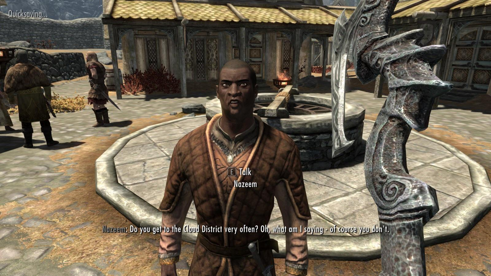
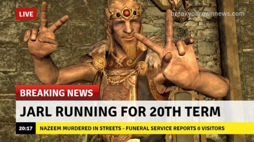

Стигнахме и до първото място. Естесвтено то ще бъде заето от най-дразнещото НПС в цялата игра и тук мисля, че говоря от името на цялата общност. Назиим! Нямам какво да кажа за него наистина освен да, да Назиим ходя до Клауд Дистрикта и също така съм Тейм на Яаръл Бълграф. А ти какъв си ?! АААААААаааа просто фермер... рзбирам. Е нека ти кажа нещо, ям душите на дракони за закуска, за да може фермата ти да оцелее, но неееееее няма проблем, често ми се случва някой да обърка Даедрик бронята ми за обикновенни дрипави дрехи Назиим.
Ако се присъедините към Companions-a е възможно да получите мисия, в която ще се наложи да научите Назиим на един юмручен урок. Ако това не е най-релаксиращата мисия в цялата игра, не знам коя е. Рутината на това НПС е да се разхожда около пазара и да обижда продуктите на останалите фермери. Много зряло Назиим, наистина. Имам чувството, че създателите на играта са го сложили в първият град още, за да предоставят боксова круша на играча от самото начало.
В Укито на Скайрим пише, че спи в Магазина за Ловуване вместо в собствената си къща с жена си, защо ли..?
Ето и най-известната фраза на персонажа спечелил тази класация:
"Do you get to the Cloud District very often? Oh, what am I saying, of course you don't." ―Nazeem